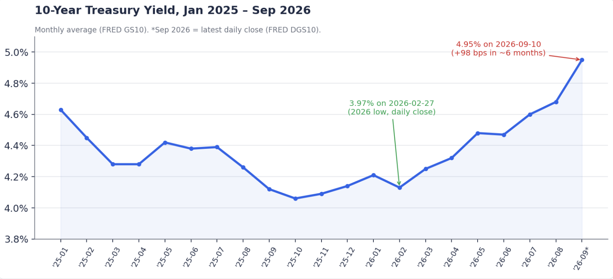
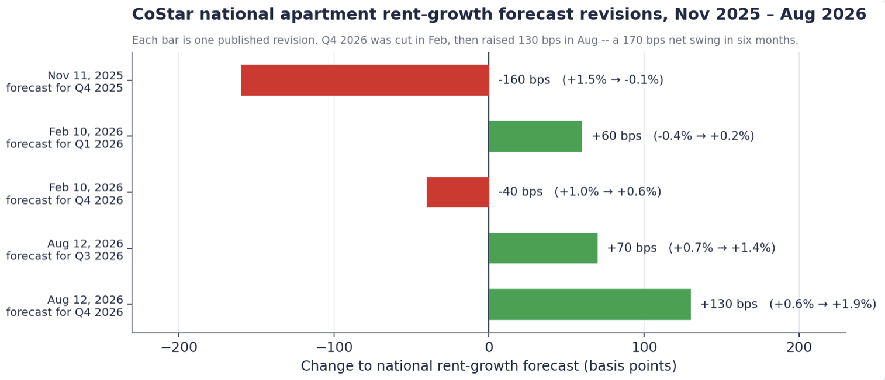
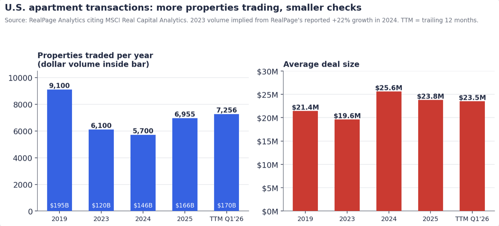
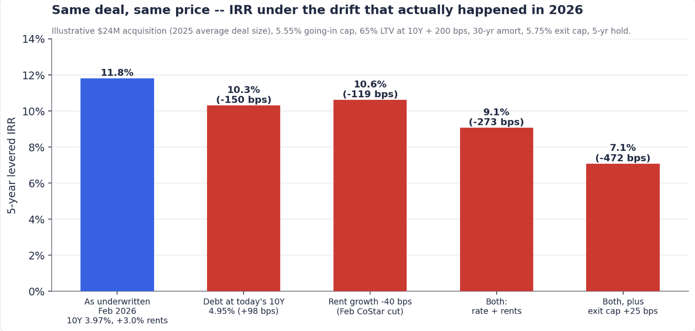

Evidence from 2025–2026
Summary. A multifamily acquisition model rests on a small number of market inputs: the cost of debt, the trajectory of rents, the exit cap rate, and, implicitly, how many other buyers are pricing the same asset. Standard practice is to set these once at the start of underwriting and carry them through to close. Between LOI and closing that is typically 60–90 days; the underwriting phase itself runs roughly 1–4 weeks.
This note measures how much three of those inputs moved during 2025 and the first three quarters of 2026, using published, dated data, and then runs a representative deal through the observed changes to estimate the effect on levered returns. Findings:
The 10-year Treasury drifted lower through 2025 (monthly averages: 4.63% in January, 4.06% in October) and reached a daily-close low of 3.97% on February 27, 2026. It then rose through the spring and summer, closing at 4.95% on September 10, 2026 (FRED series GS10 and DGS10).
The increase was not linear. Monthly averages moved from 4.13% (February) to 4.48% (May) to 4.68% (August), with the sharpest leg in early September alongside oil above $100 and market pricing of a possible Federal Reserve rate increase.

Mapped onto a typical timeline, a floating-index loan quoted in the last week of February and closing at the end of May would have seen the index rise roughly 50 bps before closing, and a further ~50 bps over the following three months.
Cap rates did not absorb the move. Transaction cap rates averaged 5.57% in 2024, 5.65% in Q1 2025, and 5.55% in Q4 2025 (RealPage, citing MSCI Real Capital Analytics); MSCI reports the sector flat at 5.6–5.7% for eight consecutive quarters. Survey-based underwriting assumptions were similarly stable: CBRE's Q2 2025 survey put the core going-in cap rate at 4.75% and the exit cap at 4.96%, and its Q4 2025 survey showed 4.75% and 4.95%. In other words, the cost of leverage changed materially while the price of the asset did not.
CoStar publishes revisions to its national apartment rent-growth forecast with release dates, which allows the size and frequency of changes to be tracked. Between November 2025 and August 2026:
The forecast for Q4 2026 alone moved from +1.0% to +0.6% and then to +1.9% across two releases six months apart — a net swing of 170 bps within a single forecast horizon. The direction of revision was not consistent: the November 2025 release was a large cut, the two 2026 releases were net increases.

For reference, the three-year rent-growth assumptions used in institutional underwriting have been comparatively steady: 2.8% for core and 3.3% for value-add in CBRE's Q2 2025 survey. The quarterly path those multi-year averages depend on has been revised by more than a full percentage point.
Source: RealPage Analytics citing MSCI RCA. 2023 dollar volume is implied from RealPage's reported 22% growth to $146B in 2024.

Two shifts in composition are relevant. First, growth in 2025 came through more, smaller transactions: property count rose 14% against 9% dollar growth, and average deal size fell from $25.6M to $23.8M. Second, the mix moved toward single assets. In Q3 2025, individual-property sales rose 21% year over year to $37B and accounted for 85% of volume, while portfolio sales fell 19%; entity-level transactions totaled $354M for the full year, down 96% from 2024 (MSCI via Multifamily Dive).
MSCI's own commentary on the 2025 data is that investors are underwriting acquisitions one property at a time, with no portfolio effects to offset underwriting errors on individual assets. The practical implication for timing is that a $24M single asset attracts a broader and less institutional buyer pool than a portfolio, and each of those buyers underwrites independently on the same marketing calendar.
To translate the observed changes into return terms, we built a representative acquisition and varied only the inputs that moved.
Deal assumptions. $24M purchase price (the 2025 average deal size); 5.55% going-in cap rate (Q4 2025 transaction average); 65% LTV; fixed-rate debt at the 10-year Treasury plus 200 bps, 30-year amortization; 5-year hold; 5.75% exit cap rate applied to forward NOI; 2% selling costs. The base case uses the February 27, 2026 10-year (3.97%) and 3.0% annual NOI growth, roughly the midpoint of the CBRE core and value-add assumptions.

Purchase price is held constant in every scenario, consistent with the observation that transaction cap rates did not move. The rate change is the largest single factor at this leverage; the rent revision is of similar magnitude. The final row adds a 25 bp exit-cap widening, which is not an observed change but is a common adjustment when the risk-free rate approaches 5%.
The model is deliberately simple — no capex reserve, no interest-only period, no refinancing — so that the sensitivities are attributable to the inputs being tested. The script is available on request.
Taken together, the data suggest three things about underwriting timelines in the current environment.
The half-life of an assumption set is short. A rate index and a rent forecast set in late February were each materially different by May. Models that take several weeks to build are, at completion, partly built on superseded inputs.
Re-underwriting cost matters as much as initial underwriting quality. When a forecast provider moves a number by 130 bps, the relevant question is how expensive it is to rerun the deal. Teams for whom that cost is hours can update; teams for whom it is weeks tend to defend the original model.
Cycle time affects deal access, not just accuracy. With roughly 7,000 properties trading annually, most of them single assets, the number of deals a sponsor can credibly bid on is bounded by underwriting throughput. Faster turnaround widens the funnel and shortens the time between first look and a lender-ready package — which, in the rate environment above, is also the time to a lock.
None of this argues for less rigor. It argues that rigor and speed are no longer a trade-off a deal team can afford to make, because the market is moving on a timescale shorter than the typical underwriting cycle.
Teez builds underwriting software for multifamily sponsors and emerging GPs — taking an OM, T-12, and rent roll to a full model in minutes and re-running it as inputs change. More at teez.live.